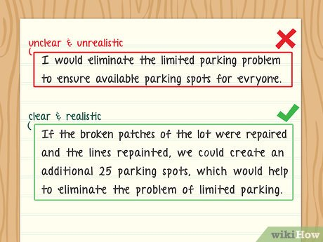

Sophomore Year
1. Academic Learning - Come to professors' office hours more frequently and maintain going to classes every day
a) Professors are great resources for advices - do not waste!
b) Classes Recommended: Advanced Data Structures, Automata and Formal Languages
c) Not Sure which elective classes to take yet?
2. Clubs/Organizations - Become chair members & Gain Leadership:
Step 1: Elevator Pitch - how to have a great speech for being voted:

Step 2: Upgrade Microsoft Suite Skills - Excel, Word, Form
Step 3: Be ready to have great public speeches
Step 4: Broaden contacts with faculty members and people in industry - they are your club potential sponsors and mentors
3. Research Seeking
Step 2: Email to professors: template - they are 365 % busy so Be Ready to send it multiples times
Step 3: Contact with lab graduates and undergraduates - they often are also in your clubs or come to those professors to ask for lab info
4. Looking for part-time jobs?
a) On campus
Have good GPA? Apply now to become a TA!
Want to learn more about research? - Working on labs is a great chance!
b) Off campus
Working on Customer Service System?